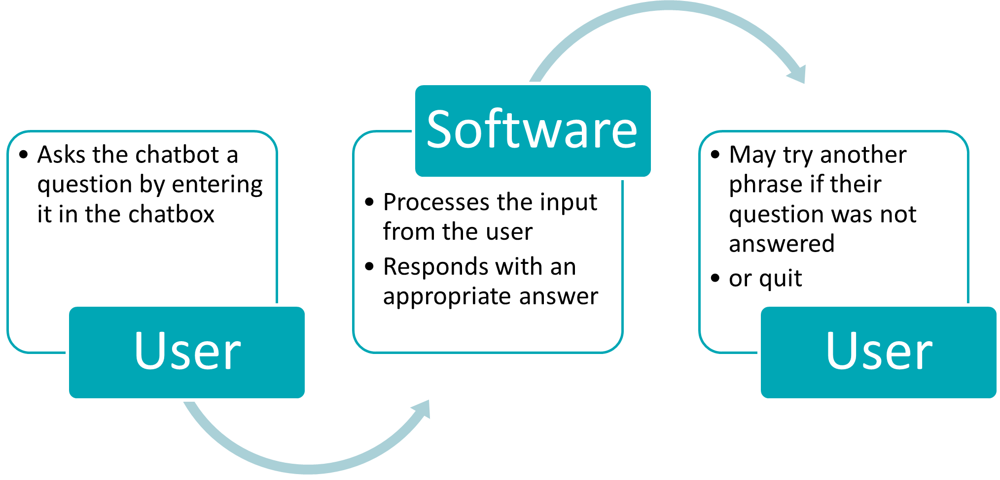

Artifact 3 - Requirements Classification & Use Case Model
Analysis and specification
Here we will consider the 3 parts of this project:
- Functional requirements
- Non-Functional requirements
- Use case model
| Functional Requirements | Define what this is in relation to our project, and if or how to implement this? |
|---|---|
| Chatting | Chatting regarding processing input from the user and the text responses from the chatbot. Defining the conversation UX and implementing those details in the python code. |
| UX | The conversation user experience, what will it look like, what will sound like and how it should respond etc. See the Microsoft worksheet included “Envisioning your bot” we will use those details to enhance the UX. |
| Searching | Medium describes a conversational search in knowledge bases using NLP/NLU and chatbots which is feasible if we research more into this and try to implement into the future state. Conversational Search in Knowledge Bases using NLP/NLU and Chatbots | by Emanuel Metzenthin | bakdata | Medium |
| Logs | Microsoft provides documentation of their conversation logs. These can be used as audit trails and in software review by the admin or stakeholder see https://docs.microsoft.com/en-us/azure/health-bot/conversation_logs We can implement this in a future state once we have determined the database layer. |
| Feedback | Offering the user an opportunity to provide feedback on their experience of the chatbot conversation is valuable. Feedback will be required in a future state as part of the review and evolution of the chatbot software. This will be determined once the database layer is implemented as a working database is required to store this information. Microsoft provides documentation of their feedback experience https://docs.microsoft.com/en-us/azure/health-bot/feedback |
| Administration system | The framework of the chatbot will impact how the administrator manages the backend. This will be considered in the next stage of the progress. This period will focus on the conversation UX. |
| Non-Functional requirements | Define what this is in relation to our project, and if or how to implement this? |
|---|---|
| User Interface (UI) and Usability | UI from a user perspective is the interface or graphics they will interact with and see visually. In this instance the chatbot UI is displayed in the web browser as an embedded object chat screen. Due to the work involved setting up the web framework and writing the website, we will aim to have a mock-up of how this should look. The focus is to keep it simple and easy to use. |
| Scalability | Scalability regarding speed and workload or how many conversations can be held at once and if it is possible to increase it. The scalability is dependent on database layer implemented and deployment of the chatbot which will be a future state. |
| Security | As the chatbot will be hosted through SharePoint at this stage we can rely on Microsoft security but will have to investigate later. |
| Third Party Interactions | Since SharePoint requires a Microsoft Account, I’m not sure if we will need to consider this element at this stage. We could investigate this in a future state. |
| Portability | As we are using SharePoint to host, and this requires a Microsoft Account. We could investigate portability in a future state as our code still need to be developed and tested. |
| Maintainability | In the beginning I would recommend 75% maintainability for 72 hours. This would give the team 72 hours deadline to fix bugs or make changes to the software when issues arise. The more complex issues would require a short-term work around if there is more time needed. |
| Exception Handling | Handover and fallbacks would need to be implemented into the software for complex or unanswered queries. That process would need to be implemented into the database of the future state. |
| Ethics | While we aim to keep the conversation generic (without mentioning specific personal details that may be deemed confidential) we must have a process in place to handle this information if for any reason it is written into the database of the future state. |
Guide used for the non-functional requirements https://www.altexsoft.com/blog/non-functional-requirements/
Use Case Model
Using Jelvic user story method, reference https://jelvix.com/blog/user-stories-acceptance-criteria#5-use-personas-to-create-user-stories
Also following the guideline set out on the gov website https://www.usability.gov/how-to-and-tools/methods/use-cases.html
- User story:
- Scenario:
- Given:
- And:
- When:
- Then:
Identify the actors
The actors are the unique people that will use the software.
Customer Journey map
| Use case 1: | Sick leave |
|---|---|
| Actor: | User - HR Staff member |
| Basic flow: | User is a new employee in HR, her team leader is not available She wants to find out where the sick leave policy is and what an employee is entitled to take. She tries the intranet and could not find what she was looking for. She opens the chatbot bubble in SharePoint and types her question “Can you tell me about sick leave? “ Immediately she receives a reply from the chatbot with the answer. |
| Use case 2: | Adjunct appointments |
|---|---|
| Actor: | User - HR Staff member |
| Basic flow: | User is a new employee in HR, her team leader is not available She wants to find out what an Adjunct appointment is and how to process it. She tries the intranet and could not find what she was looking for. She opens the chatbot bubble in SharePoint and types her question “Can you tell me about Adjuncts? “ Immediately she receives a reply from the chatbot with the answer. |
The use cases that involve the HR Staff member will be much the same as 1 and 2 with different topics.